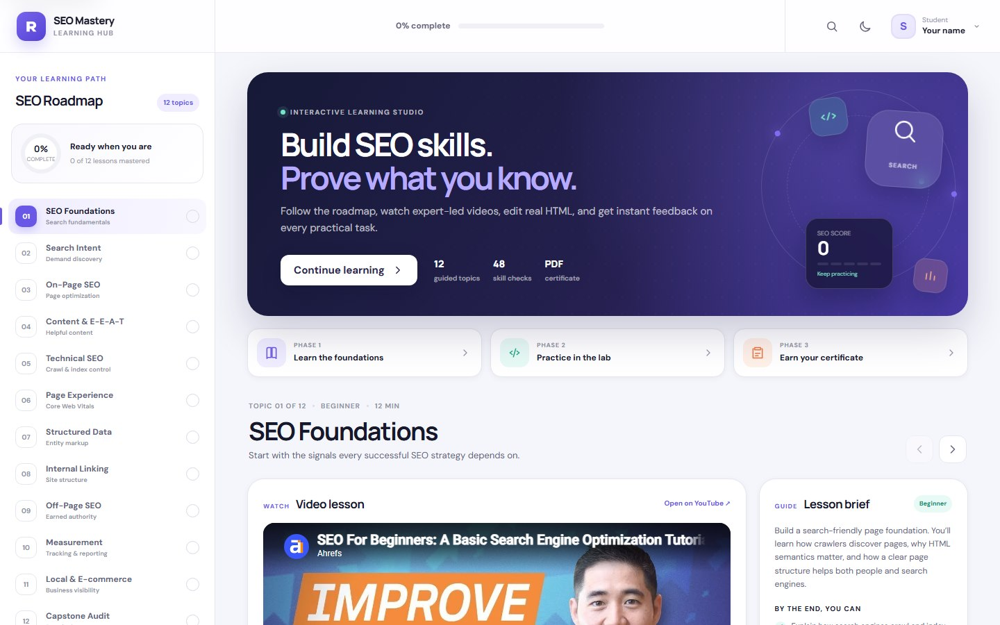
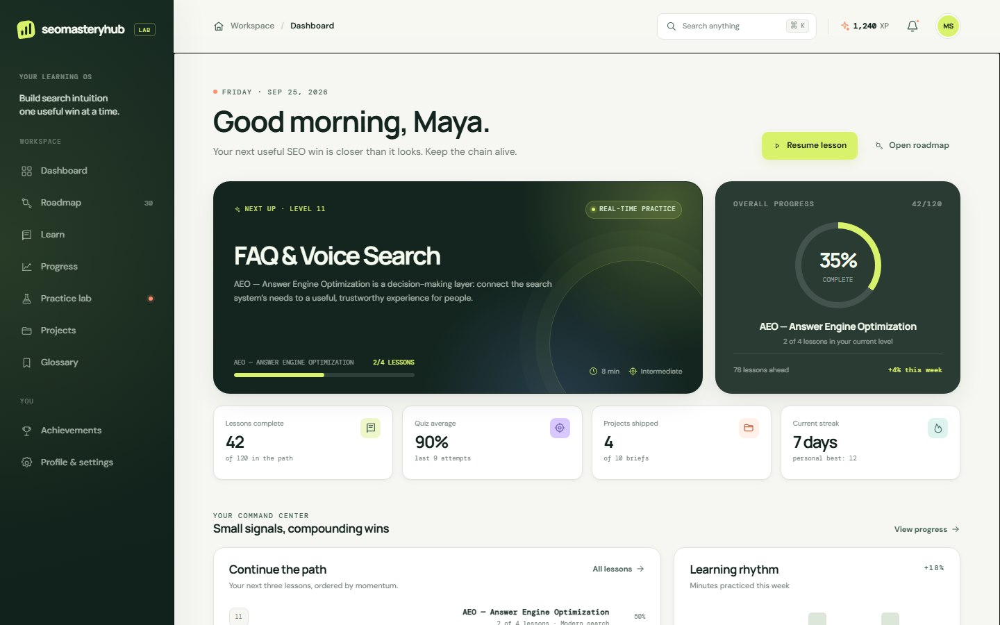

Live projectSEO Mastery Hub v2
The live build presents a 12-topic roadmap, expert-led video lessons, lesson briefs, editable HTML exercises, browser preview, instant checks, progress tracking, and a PDF certificate.
Read full analysisLive project reviews
These reviews use information captured from the live Vercel builds: their public metadata, visible product features, interface structure, and current technical SEO signals. They are product reviews—not invented ranking or traffic claims.
Two live projects
Each project turns search concepts into a visible learning loop with a clear next action, feedback, and progress.

Live projectThe live build presents a 12-topic roadmap, expert-led video lessons, lesson briefs, editable HTML exercises, browser preview, instant checks, progress tracking, and a PDF certificate.
Read full analysis
Live projectThe live dashboard brings a 30-item roadmap, progress, practice lab, projects, glossary, achievements, profile settings, XP, quiz average, and streaks into one workspace.
Read full analysisTechnical review
The portfolio shows both what works in the product and what could be improved for public discovery and long-term search visibility.
robots.txt and the XML sitemap returned 404https://seomasteryhub.local/.local domainMethod: Live HTML, metadata, robots.txt, and sitemap signals were checked on September 25, 2026. This review intentionally does not claim rankings, traffic growth, or client revenue.
Review approach
A credible review separates the live product experience from the technical questions a search consultant should verify.
Review the real interface, navigation, content, and calls to action.
Check titles, descriptions, headings, structured data, and public files.
Describe the opportunity in plain language with a practical next step.
Do not turn product screenshots or public features into unsupported results.
Build the next useful thing
Share the website, audience, and outcome you want. Peter will help identify the next useful SEO and content decision.